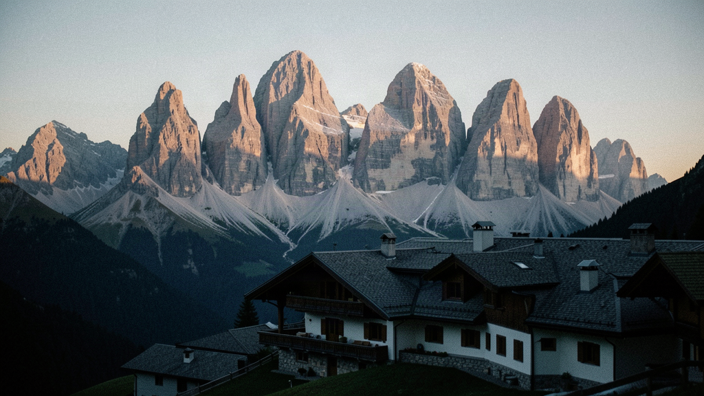
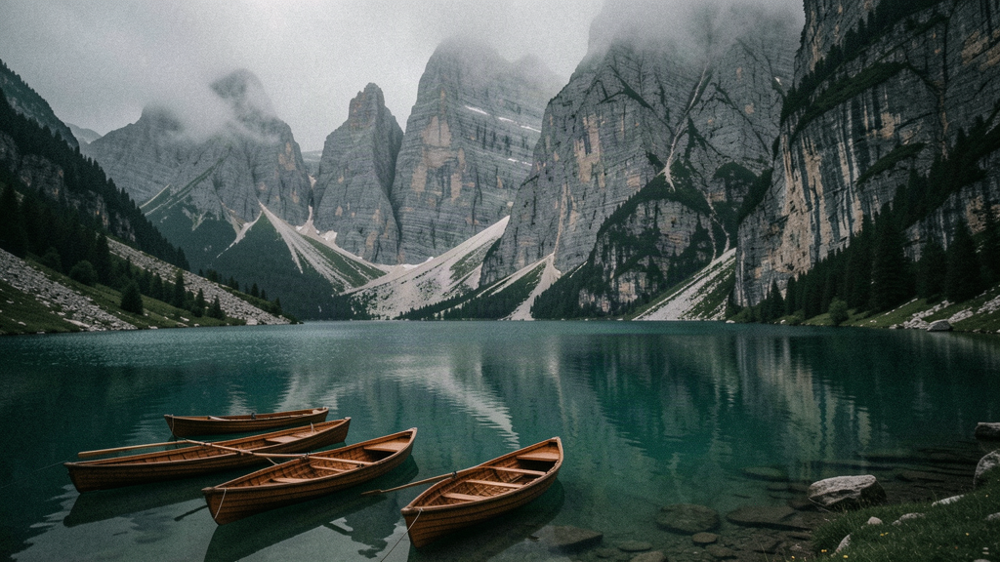
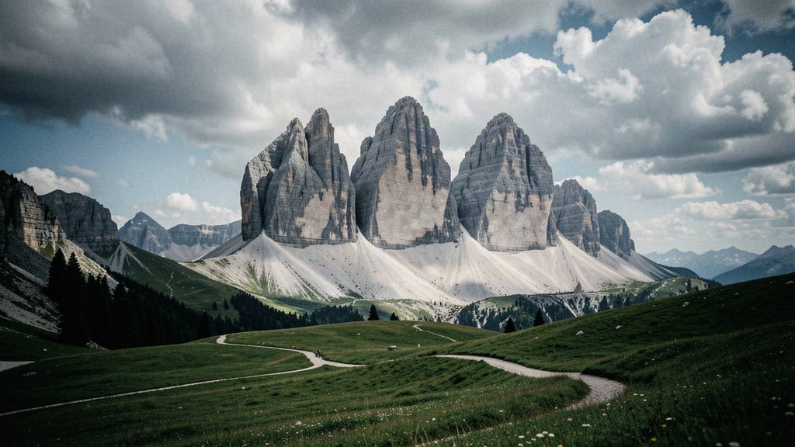
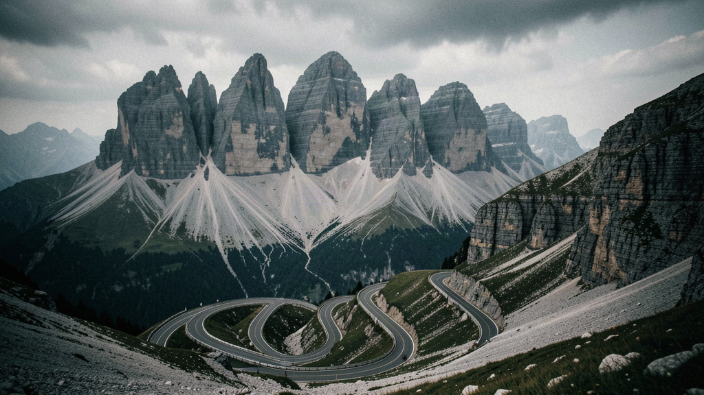
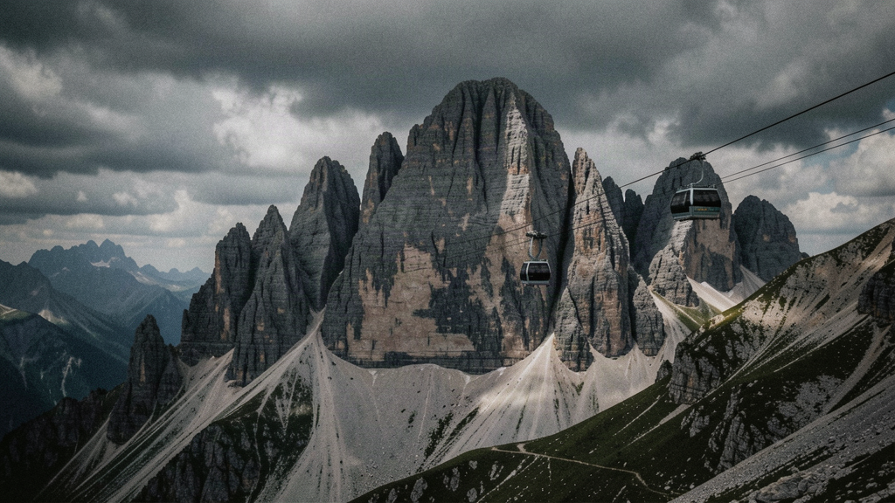
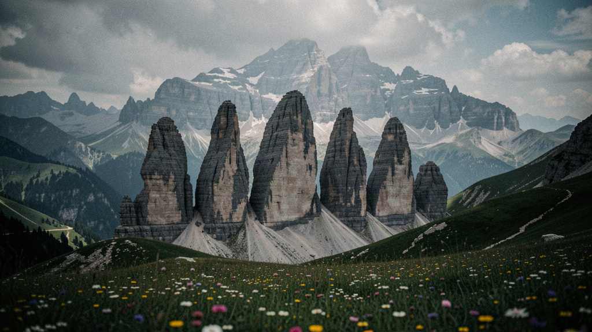
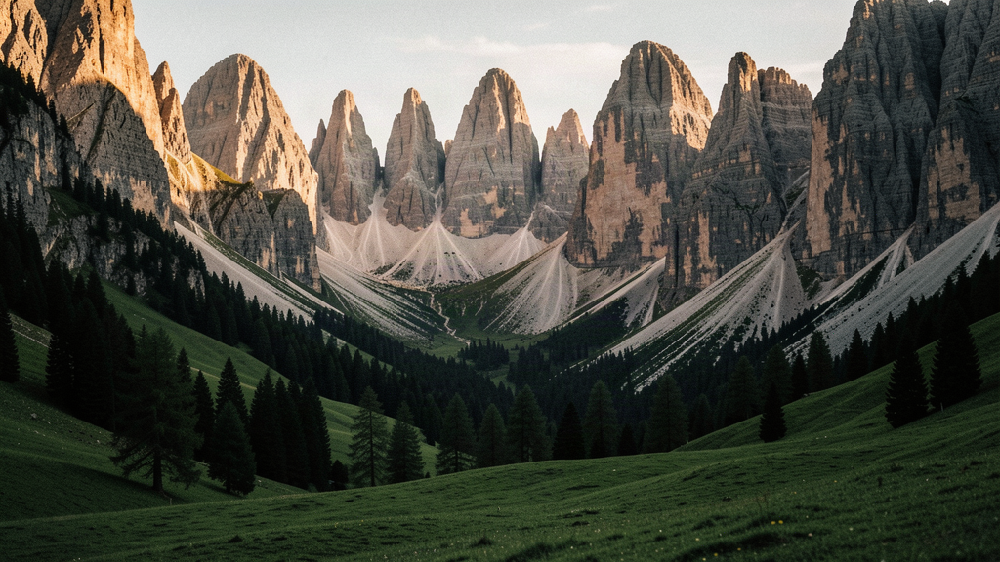

Italy · Summer
Seven nights, your own room, a table of six. Cable cars and rifugi, high meadows, a pace that earns the dinner.
You show up solo. You don't travel alone. This is a summer itinerary (June–August) based in Cortina d'Ampezzo, in the Italian Alps. Most days you take a cable car or a minivan to a trailhead and walk to a rifugio for lunch. The pace earns the dinner. We can't promise the five people on your table become your hiking clan — we won't pretend to. What we've done is match you for range, book you your own room, and put a Ladin-born mountain guide on the ground who knows which lift is running and which rifugio runs out of canederli by two.
Your own room. Every night, your own key. Single occupancy is the default, not a paid upgrade. Company at the table, quiet in your room.
The price. £2,480 per person, own room included. This is a band, not a fixed quote — we haven't signed every supplier yet, so the first departures are expected in 2026 or 2027, and you're not putting money on a date that doesn't exist.
Six of you, matched for range rather than likeness — mixed pace and energy, a person reviews the fit before it locks.
Your local guide is Elena Pichler, from a Ladin family in the Ampezzo valley, a certified mountain guide who's walked every trail on this list and a few that aren't. She'll tell you when the Pass Pordoi cable car is crowded and when to take the shaded side of the Tre Cime loop.

Fly into Venice Marco Polo (VCE); the transfer to Cortina d'Ampezzo is ~135 km, about two hours north on the A27 then the SR51 through the Cadore. Check in to your room at a mountain hotel on the Corso Italia, Cortina's main street, with a balcony over the Tofana massif.
Walk the Corso Italia with Elena — the boutiques, the church of the Santi Filippo e Giacomo, and the Museo delle Regole d'Ampezzo if the weather's soft. She sets the week's pace and hands out the lift-pass cards.
First table dinner at the hotel's kitchen, South Tyrolean-style: schlutzkrapfen (spinach ravioli), speck, and a glass of Lagrein. Included: dinner.

Minivan departs 08:30, ~60 km north (1h15) to Lago di Braies (Pragser Wildsee), the pale-green lake below the Croda del Becco. Walk the flat circular path around the shore (~45 min) and, if it's calm, one of the wooden boats from the Hotel Pragser Wildsee landing.
Short drive to Prato Piazza (Plätzwiese), a high alpine meadow at 2,000 m. Walk north toward the Monte Specie viewpoint — gentle, about 1h30 return — with the Pale di San Martino spread out south. Lunch at the Rifugio Prato Piazza. Included: lunch.
Back in Cortina. Dinner at El Camineto on the Corso, known for casunziei (beetroot ravioli with poppy seed). Included: dinner.

Depart 08:00. Drive ~50 min via Misurina to the Rifugio Auronzo (2,333 m) — the toll road is €30 per car, included. From the rifugio, the classic loop: east toward Rifugio Lavaredo, then the long traverse beneath the north faces to Rifugio Locatelli (2,450 m), with the three towers straight above. About 3 hours, 5.5 km, mostly level with one short climb.
Lunch at Rifugio Locatelli — canederli in broth and a ritt (the local butter cake). Rest at the tables in the sun before retracing the loop. Elena sets the turnaround by the group's legs, not the map.
Return to Cortina. Quiet dinner at Ristorante Tivoli, just outside town. Included: dinner.

Depart 08:30, ~60 km (1h) via Arabba to the Pass Pordoi cable car. The lift climbs to Sass Pordoi at 2,950 m — the "Terrazza delle Dolomiti," a 360° view over the Sella, the Marmolada, and the Catinaccio. Allow 90 minutes up top; the café at the top does a proper espresso.
Drive down to Canazei and Campitello in the Val di Fassa, then the gentle Col Rodella cable car for a meadow walk above the valley. Lunch in Canazei at Rifugio Rodella or a pizzeria in town — one of the two open lunches. Not included: lunch.
Back to Cortina. Dinner at Ai Ponte (Località Lacedel), a baita-style kitchen by the Boite river. Included: dinner.

The Cortina–Tofana cable car from the town edge climbs to Rifugio Cacciatori (1,820 m) and on to Rifugio Dibona (2,083 m) below the Tofana di Mezzo (3,244 m). Walk the Sentiero degli Alpini, a ledge path with fixed cables — Elena fits the via ferrata set to those who want it, others take the easier traverse. About 2h return from Dibona.
Down by lunch. Afternoon free in Cortina — the Lagazuoi exhibit at the museum, or a caffè on the Corso. One of the two open lunches, or included at your call. Not included: lunch (open).
Group dinner at Ristorante da Beppe (Corso Italia 122), a Cortina institution for gnocchi di zucca and game. Included: dinner.

Depart 08:30, ~30 km (40 min) over the Passo Falzarego to the Cinque Torri lift. Ride up to the rifugio at 2,113 m; the five towers are a open-air museum of First World War trenches — walk the marked loop among them (1h). Elena runs a via ferrata intro on the Lagazuoi side for those who want the cable.
Lunch at Rifugio Scoiattoli, perched under the towers with a clear view of the Lagazuoi face. Then the short climb or cable car to Rifugio Lagazuoi (2,752 m) and its famous terrace over the Tofana and the Falzarego. Included: lunch.
Return to Cortina. Farewell dinner at Hotel de Len's restaurant — a last spread of casunziei, speck platter, and strudel with grappa from the Alto Adige. Included: dinner.

Choice day. Most of the table takes the minivan ~50 km (1h) to Ortisei in the Val Gardena and the Seceda cable car (2,518 m) for the ridge walk above the Odle peaks — about 2h on the grassy crest. Others stay in Cortina for the Lake Misurina shore or a longer lie-in.
Final group lunch in Cortina at El Toulà (Via Majon 2), a longer menu to close the week — one of the open lunches, or included at your call. Included: lunch.
Departures the next morning; if you're on a late flight, your room is held and Elena points you to the last spritz on the Corso.
Seven nights, your own room, a Ladin guide who knows the lifts, and a table matched to give the week a fair chance. We can't promise the six of you become a hiking clan — we've told you that. What we can say is the trails are the real ones, the cable cars are the ones running, and dinner is rarely quiet.
When a table opens for Italy in Summer, we'll tell you. One message when there's something real — no newsletter, no hard sell.
Register your interest